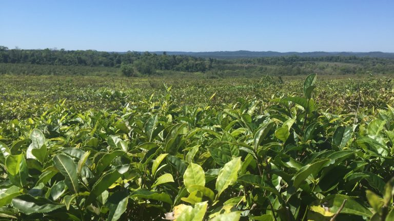

|
Die Grundlage für MateRausch besteht wie die meisten Mate Getränke aus dem Yerba-Tee-Strauch, der hauptsächlich
in den üppigen Regionen Lateinamerikas gedeiht. Die Mate-Pflanzen werden mit Sorgfalt auf Plantagen in dieser
spezifischen Region angebaut und unter Berücksichtigung traditioneller Anbaumethoden geerntet. In Lateinamerika
hat die Mate-Pflanze eine lange Geschichte und fungiert als Nationalgetränk, das aufgrund seiner stimulierenden
Eigenschaften hoch geschätzt wird. Der Prozess der Mate-Gewinnung beginnt in den sonnenverwöhnten Plantagen
Lateinamerikas, wo die Pflanzen ideale Bedingungen für ihr Wachstum finden. Nach der sorgfältigen Ernte werden
die Blätter und Zweige der Mate-Pflanze weiterverarbeitet, um die hochwertigen Rohstoffe zu gewinnen, die schließlich
in MateRausch verwendet werden. Die fortlaufende Bezugnahme auf Lateinamerika als Quelle unserer Mate unterstreicht
nicht nur die authentische Herkunft unserer Produkte, sondern auch unser Engagement für Qualität und Respekt gegenüber
den traditionellen Anbaumethoden in dieser Region. Wir sind stolz darauf, die Tradition des Mate-Genusses aus
Lateinamerika zu pflegen und Ihnen ein Produkt von höchster Qualität anzubieten.
|

|